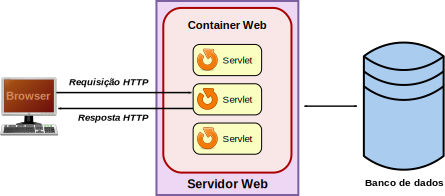
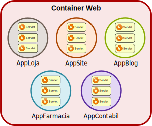

Leitura Recomendada 🔖

Capítulo 3: Servlets

Capítulo 4: Introd. aos Servlets
Capítulo 6: A classe HttpServlet
Pequenos programas Java para responder a requisições HTTP.
Antes de uma requisição de cliente chegar a um Servlet, esta requisição passará pelo Container Web em que o Servlet foi configurado.
Servlets são partes de uma Aplicação Java Web
Um Container Web pode executar várias aplicações ao mesmo tempo.
Cada aplicação pode ter múltiplos servlets configurados para responder.
ou, como colocar um Servlet no forno…
Inicie uma Aplicação Web com o NetBeans
Crie uma Classe Java
package fanese.web;
import java.io.IOException;
import java.io.PrintWriter;
import javax.servlet.GenericServlet;
import javax.servlet.ServletException;
import javax.servlet.ServletRequest;
import javax.servlet.ServletResponse;
public class ExemploServlet extends GenericServlet {
@Override
public void service(ServletRequest request, ServletResponse response)
throws ServletException, IOException {
PrintWriter conteudo = response.getWriter();
conteudo.println("<html>");
conteudo.println("<head><title>Java Web</title>"
+ "<meta charset=utf-8></head>");
conteudo.println("<body>Olá Mundo Java</body>");
conteudo.println("</html>");
}
}
Configurando a aplicação para conhecer o Servlet
Crie o arquivo WEB-INF/web.xml
Configurando Servlet para responder em /OlaMundo
<?xml version="1.0" encoding="UTF-8"?>
<web-app xmlns="http://xmlns.jcp.org/xml/ns/javaee"
xmlns:xsi="http://www.w3.org/2001/XMLSchema-instance"
xsi:schemaLocation="http://xmlns.jcp.org/xml/ns/javaee http://xmlns.jcp.org/xml/ns/javaee/web-app_3_1.xsd"
version="3.1">
<servlet>
<servlet-name>Servlet01</servlet-name>
<servlet-class>fanese.web.ExemploServlet</servlet-class>
</servlet>
<servlet-mapping>
<servlet-name>Servlet01</servlet-name>
<url-pattern>/OlaMundo</url-pattern>
</servlet-mapping>
<session-config>
<session-timeout>
30
</session-timeout>
</session-config>
</web-app>
Configure o Tomcat para ouvir em localhost
Execute a aplicação e acesse /OlaMundo
Dentro do método service(), insira antes de escrever o conteúdo, a instrução abaixo.
Depois teste no browser e responda: mudou alguma coisa?
response.setCharacterEncoding("utf-8");
response.setContentType("text/html");
package fanese.web;
import java.io.IOException;
import java.io.PrintWriter;
import javax.servlet.ServletException;
import javax.servlet.http.HttpServlet;
import javax.servlet.http.HttpServletRequest;
import javax.servlet.http.HttpServletResponse;
public class ExemploServlet2 extends HttpServlet {
@Override
protected void doGet(HttpServletRequest request, HttpServletResponse response)
throws ServletException, IOException {
PrintWriter conteudo = response.getWriter();
conteudo.println("Acesso via GET realizado");
}
@Override
protected void doPost(HttpServletRequest request, HttpServletResponse response)
throws ServletException, IOException {
PrintWriter conteudo = response.getWriter();
conteudo.println("Acesso via POST realizado");
}
}
Configure o web.xml para o novo Servlet
<servlet>
<servlet-name>Servlet via HTTP</servlet-name>
<servlet-class>fanese.web.ExemploServlet2</servlet-class>
</servlet>
<servlet-mapping>
<servlet-name>Servlet via HTTP</servlet-name>
<url-pattern>/via-http</url-pattern>
</servlet-mapping>
Usando o Postman, faça as seguintes requisições:
Servlet que obtém parâmetros da query string
public class ExemploServlet3 extends HttpServlet {
@Override
protected void doGet(HttpServletRequest request, HttpServletResponse response)
throws ServletException, IOException {
// Obtém os dados enviados
String txtNome = request.getParameter("nome");
String txtIdade = request.getParameter("idade");
// Processa os dados
if (txtNome == null) {
txtNome = "[anônimo]";
}
String classeIdade = "menor";
int idade = Integer.parseInt(txtIdade);
if (idade >= 18) {
classeIdade = "maior";
}
// Devolve uma resposta com os dados
PrintWriter conteudo = response.getWriter();
conteudo.println("<html><head><meta charset=utf-8></head>");
conteudo.println("<body>");
conteudo.println("<b>" + txtNome + "</b> tem <b>"
+ idade + "</b> anos (de " + classeIdade + ")");
conteudo.println("</body></html>");
}
}
Obter parâmetros via POST: a implementação é igual
public class ExemploServlet4 extends HttpServlet {
@Override
protected void doPost(HttpServletRequest request, HttpServletResponse response)
throws ServletException, IOException {
// Obtém os dados enviados
String txtNome = request.getParameter("nome");
String txtIdade = request.getParameter("idade");
// Processa os dados
if (txtNome == null) {
txtNome = "[anônimo]";
}
String classeIdade = "menor";
int idade = Integer.parseInt(txtIdade);
if (idade >= 18) {
classeIdade = "maior";
}
// Devolve uma resposta com os dados
PrintWriter conteudo = response.getWriter();
conteudo.println("<html><head><meta charset=utf-8></head>");
conteudo.println("<body>");
conteudo.println("<b>" + txtNome + "</b> tem <b>"
+ idade + "</b> anos (de " + classeIdade + ")");
conteudo.println("</body></html>");
}
}
Servlets também podem ser mapeados por anotação:
package fanese.web;
⋮
import javax.servlet.GenericServlet;
import javax.servlet.annotation.WebServlet;
@WebServlet(name = "Servlet01", urlPatterns = {"/OlaMundo"})
public class ExemploServlet extends GenericServlet {
⋮
}
Capítulo 3: Servlets
Capítulo 4: Introd. aos Servlets
Capítulo 6: A classe HttpServlet